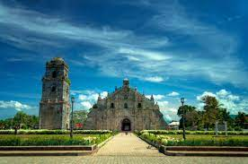

The Ilocos Region lies on the northwestern coast of Luzon. It is bounded by Cagayan, Kalinga, Apayao, Abra, Mt. Province, Benguet and Nueva Vizcaya on the east; Nueva Ecija, Tarlac and Zambales on the south; and the China Sea on the northwest. Its strategic location has made it the gateway to East Asia.
Illocos Norte
PHOTO GALLERY
